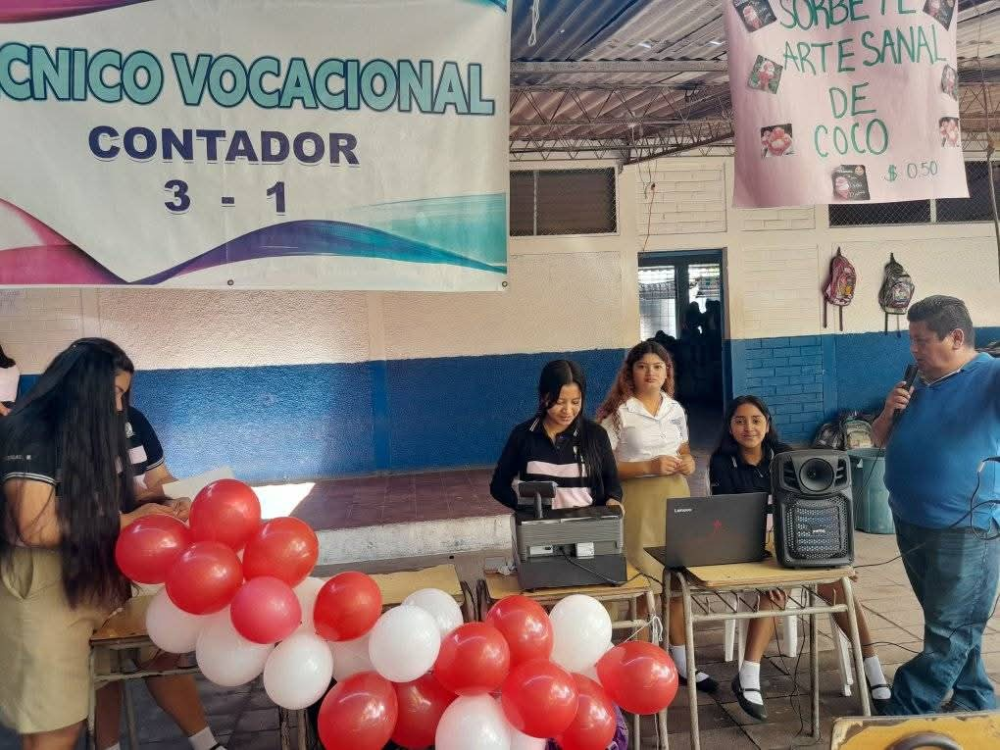
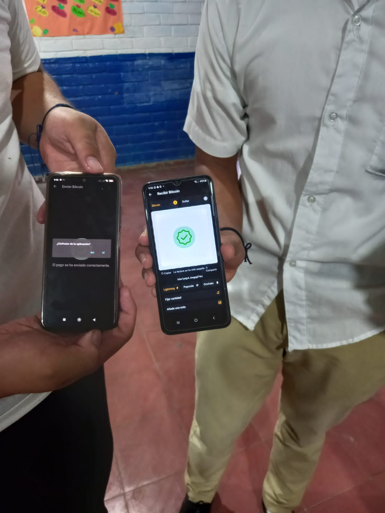

Materias en Primera Infancia
- Creatividad
- Lectura
- Caligrafía

Explora la educación desde los primeros años hasta el final del tercer ciclo.
Una base sólida para tu futuro universitario y profesional.
Formación especializada para el apasionante campo de la salud.
Desarrolla habilidades técnicas en el mundo de la mecánica automotriz.

Prepara tu camino en la administración y finanzas empresariales.
En esta etapa, nos enfocamos en el desarrollo integral de nuestros estudiantes, desde las habilidades motoras finas en parvularia hasta el pensamiento crítico y la preparación para el bachillerato en noveno grado. Nuestro plan de estudios abarca...
Aquí puedes agregar más detalles sobre el plan de estudios, actividades extracurriculares, metodologías de enseñanza, etc. ¡Sé creativo!
El Bachillerato General en el Complejo Educativo Marcos Gómez Núñez ofrece una educación integral que prepara a los estudiantes para la universidad y la vida. Con un enfoque en áreas como matemáticas, ciencias, lenguaje y ciencias sociales, nuestros graduados están equipados con las herramientas necesarias para cualquier camino que elijan.
Detalla aquí los enfoques, proyectos, oportunidades de voluntariado, etc.
Nuestro Bachillerato Técnico en Salud está diseñado para formar a futuros profesionales comprometidos con el bienestar. Los estudiantes adquieren conocimientos teóricos y prácticos en áreas como primeros auxilios, anatomía básica, atención al paciente y promoción de la salud. Contamos con laboratorios equipados y convenios para prácticas profesionales.
Añade información sobre prácticas, certificaciones, oportunidades laborales.
Si te apasionan los vehículos, nuestro Bachillerato Automotriz es para ti. Aprenderás sobre mecánica general, sistemas eléctricos, diagnóstico de fallas, mantenimiento y reparación de motores. Contamos con talleres modernos y docentes con experiencia en la industria automotriz. Prepárate para una carrera con mucha demanda.
Menciona equipos especializados, proyectos, visitas a talleres.
El Bachillerato Administrativo Contable te brinda las herramientas para entender y gestionar las finanzas de cualquier organización. Aprenderás sobre contabilidad, auditoría, administración de empresas, mercadeo y gestión de recursos humanos. Este bachillerato te abre puertas en el sector empresarial.
Destaca software de contabilidad, prácticas en empresas, habilidades desarrolladas.

